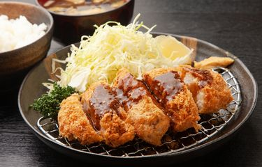

Chicken Katsu Recipe

Description:
Chicken Katsu is one of the most popular side dish from Japan
It is a very versatile side dish which can accompany many dishes such as fried rice
Ingredients:
- Chicken Breast
- Corn Flour
- Black Pepper
- Breadcurmb
- Salt
- Oil
- Eggs
Steps:
- Take half of a chicken breast and flatten with a mallet
- Season with salt and black pepper
- Cover chiken with corn flour
- Prepare an egg bath by stirring cracked egg in a wide and shallow container
- Prepare a coating tray filled with breadcrumbs
- Dip chicken in egg bath, then coat it with breadcrumbs (repeat it 2x for a crispy coating)
- Heat up a generous amount of oil in a deep pan
- Deep fry the chicken in medium heat for about 5-7 minutes
- Serve with plain white rice or any other main dish of choice